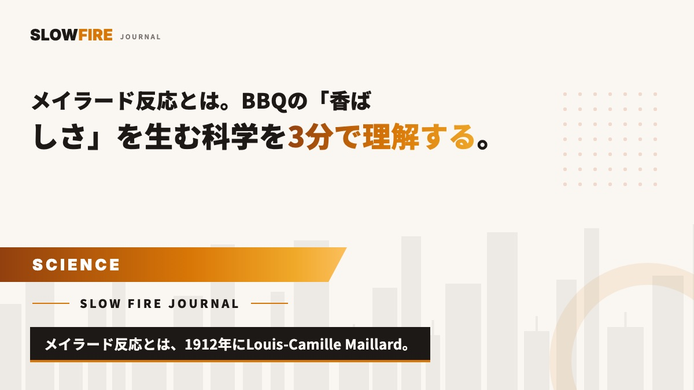

メイラード反応とは。BBQの「香ばしさ」を生む科学を3分で理解する
同じ肉なのに、お店で食べるステーキはどうしてあんなに香ばしいんだろう——そう思ったこと、ありませんか？じつはその香ばしさの正体が、メイラード反応（Maillard Reaction）なんです。肉のたんぱく質に含まれるアミノ酸と糖が140〜200℃で結びついて、褐色の物質と数百種類の香り成分を作り出す化学反応のこと。1912年にフランスの化学者 Louis-Camille Maillard が発見しました。ステーキの焼き目、ブリスケットのバーク、パンの皮、コーヒーの香り — 「加熱した食品のおいしさ」のほとんどは、この反応が生んでくれています。BBQの世界では、火を理解するためのいちばん基礎になる科学なんですよね。

メイラード反応の定義
メイラード反応とは、ひと言で言えば「アミノ酸 + 糖 + 熱」が出会ったときに起きる褐変反応のことです。
反応の結果として生まれるものは、大きく2つあります。
- 褐色のメラノイジン：焼き目の「茶色」を作る色素
- 数百種類の揮発性化合物：香ばしさ・甘味・コクなど「香り」を作る分子群
面白いのは、メイラード反応で生まれる香り成分が、肉の種類によって全部違うこと。同じ反応なのに、ビーフを焼くと「ローストビーフの香り」になって、ポークだと「ベーコンの香り」、コーヒー豆を焙煎すると「コーヒーの香り」になります。アミノ酸と糖の組み合わせが食材ごとに違うので、反応の途中で枝分かれする化合物が変わるからなんですよね。
つまりメイラード反応とは、「単一の反応」というよりも、食材ごとに違う物語を語る共通のフォーマットのようなものなんです。同じ温度帯で、同じ仕組みで起きるのに、出てくる香りは食材の個性そのもの。BBQで肉を焼くという行為は、その肉が持っている本来の香りを、化学反応の力で引き出してあげている、と言うこともできます。
1912年 — Louis-Camille Maillardの発見
メイラード反応を発見したのは、フランスの医師であり化学者でもあったLouis-Camille Maillard（ルイ＝カミーユ・メイラール、1878-1936）です。
1912年、ナンシー大学で研究していたMaillardは、アミノ酸と糖を混ぜて加熱したときに、溶液が褐色に変わることに気づきました。当初の研究目的は料理ではなくて、人間の体内での糖尿病とアミノ酸代謝のしくみを解明することだったんです。つまりこの反応は、料理科学のためではなく、医学研究の副産物として発見されたんですよね。
その後、第二次世界大戦中の軍用食料の保存研究で、化学者たちがMaillardの論文を再発見します。料理科学への本格的な応用は1950年代以降で、アメリカのJohn Hodgeが1953年に詳しい反応経路図を発表してから、「焼き料理のおいしさ」を化学で説明する時代が始まりました。
反応の仕組み — アミノ酸と糖の出会い
メイラード反応は、たった一つの反応ではなくて、数十段階の連鎖反応です。簡略化すると、次の3段階になります。
| 段階 | 何が起きるか | 結果 |
|---|---|---|
| 1 | アミノ酸と糖が結合（Amadori化合物の生成） | 無色の中間体 |
| 2 | 中間体が脱水・分解し、不安定な化合物群を作る | 香り分子の前駆体 |
| 3 | 前駆体同士が再結合し、メラノイジンと揮発性化合物を生成 | 褐色 + 香り |
肉の中で起きる場合は、たんぱく質のアミノ酸（リジン・グルタミン酸など）と還元糖（グルコース・リボースなど）が加熱で結合します。ここがスタート地点です。
面白いのは、水分が多いとメイラード反応は遅くなること。100℃を超えるにはまず水分の蒸発が必要で、表面に水分が残ったままだと表面温度が100℃前後に張りついてしまって、140℃以上に届かないからなんですよね。「表面を乾かしてから焼く」「塩を事前に振る」といったコツは、すべてメイラード反応を早く・強く起こすためのテクニックなんです。
温度と時間の関係
メイラード反応の温度帯は、だいたい次のとおりです。
| 温度 | 反応の状態 | 適用 |
|---|---|---|
| 100℃以下 | 反応は起きない（水分の蒸発のみ） | — |
| 110-130℃ | 非常にゆっくり進行（数時間単位） | 燻製・ロー&スローのバーク形成 |
| 140-160℃ | 本格的に開始（数十分単位） | オーブン・ローストビーフ |
| 180-200℃ | 最も活発（数十秒〜数分単位） | ステーキの焼き目 |
| 200℃超 | 焦げ（炭化）に近づく | 注意：苦味成分が増える |
大事なのは「温度 × 時間」のトレードオフです。低温で長時間焼くのか、高温で短時間焼くのかで、メイラード反応の進み方が変わってきます。
ブリスケットのバーク（黒い表面の層）は、110℃の燻製で10時間以上かけて作られる「低温長時間型のメイラード反応」。ステーキの焼き目は、260℃の鉄板で30秒×4面の「高温短時間型のメイラード反応」。同じ反応でも、温度の設計しだいで、まったく違う質感が生まれます。
もう一つ大事なのは、反応速度は温度が10℃上がるごとに約2倍になること（化学反応の一般的な法則です）。140℃と160℃では、反応のスピードがおよそ4倍違ってきます。だから「メイラードの30秒」と「メイラードの10時間」は、絶対的な時間の長さこそ違っても、生まれる香りの「層の数」で言えば、じつは同じくらいの濃度まで到達できるんですよね。ピットマスターが時間を「投資」するのは、低温だからこそ可能な、繊細な香りの組み合わせを引き出すためなんです。
メイラード反応が一番美しく進む条件
食品科学の研究では、メイラード反応の最適温度は150-180℃、最適pHは弱アルカリ性（pH 7-9）とされています。だから本場アメリカでは、ブリスケットに重曹を少量振ることがあるんです。表面のpHを上げて、メイラード反応を促してあげるためですね。これも科学の応用です。
カラメル化との違い
料理の本ではよく混同されますが、メイラード反応とカラメル化は別の反応なんです。
| メイラード反応 | カラメル化 | |
|---|---|---|
| 必要な材料 | アミノ酸 + 糖 | 糖のみ |
| 開始温度 | 約140℃ | 約160℃ |
| 主な用途 | 肉・パン・コーヒー | 砂糖・玉ねぎ・ソース |
| BBQでの場面 | 肉そのものの焼き目 | BBQソースの艶 |
BBQで両者が同時に起きるのが、バーンエンドの二度焼きです。肉の表面ではメイラード反応、塗られたBBQソースの糖分ではカラメル化が並行して進んで、独特の艶と香ばしさが生まれます。BBQ用語辞典でも混同されがちな2つの反応ですが、両方が起きるからこそ、BBQは特別な料理になるんですよね。
BBQでメイラード反応をどう設計するか
BBQの世界では、メイラード反応をどう発生させるかが料理の質を決めます。手法は大きく3つあります。
- 高温焼き型（ステーキ・厚切り肉）：200℃以上で短時間に強い焼き目をつける。リバースシア法はこの考えを徹底し、最後の高温段階だけでメイラード反応を起こします。
- 低温長時間型（ブリスケット・ポークショルダー）：110-130℃で10時間以上かけて表面に「バーク」と呼ばれる黒い層を形成。焦げにくく深い香ばしさが層として積み重なります。テキサスクラッチで巻くかどうかの判断は、バーク形成と柔らかさのバランスを取るためなんです。
- ハイブリッド型（リブ・チキン）：低温調理後、最後だけ温度を上げて焼き目を強める。ロー&スローとリバースシアの中間の発想です。
家庭でメイラード反応を最大化する3条件
①肉の表面を完全に乾かす（水分が残ると100℃で蒸発に時間を奪われてしまいます）、②鉄板やフライパンを十分に予熱する（200℃以上）、③肉を置いたあとは動かさない（接触面の温度低下を防ぐため）。塩を事前に振っておくと水分が引き出されて、表面が乾いて反応が起きやすくなりますよ。
「香ばしさ」を逆算する
メイラード反応を知ると、BBQの世界の見え方が変わります。「いい焼き目」は偶然の産物ではなくて、温度と時間と水分の設計によって、意図的に作るものなんですよね。火を強くすれば反応が早く進む、表面を乾かせば反応が始まる温度に早く届く、糖分を足せばカラメル化も併走させられる — すべて科学的な理由で説明できます。
SLOW FIRE は、火を「コントロールするもの」ではなくて「対話するもの」だと考えています。メイラード反応は、その対話の文法のようなもの。140℃から200℃の温度帯で何が起きているかを知っていれば、肉の表面を見るだけで「あと何分焼くべきか」が直感的に分かるようになります。140℃を超えれば、誰の肉でも、同じ香ばしさが生まれる — これがBBQが世界中で愛される理由でもあるのかなと思います。
家庭でステーキを焼く30秒も、ピットマスターがブリスケットに12時間かける時間も、起きている化学は同じです。ただ温度と時間の組み合わせが違うだけなんですよね。だからこそ、初心者の方でも「正しい温度に予熱する」「表面を乾かす」「動かさない」の3つを守れば、いきなりプロ並みの焼き目が出せます。BBQを日常にするための最初の鍵は、技術ではなくて、メイラード反応という共通言語を持つことなんです。
FAQ
メイラード反応についてよくある質問
メイラード反応とは何ですか？
食材のアミノ酸と糖が加熱によって反応し、褐色の物質と数百種類の香り成分を作り出す化学反応です。1912年フランスの化学者Louis-Camille Maillardが発見しました。BBQ・パン・コーヒー・チョコレートなど、加熱した食品の「香ばしさ」のほとんどはこの反応によるものです。
メイラード反応は何度で起きますか？
約140℃から本格的に開始し、150-200℃で最も活発になります。100℃以下では水分の蒸発のみで反応は起きません。200℃を超えると焦げ（炭化）に近づき、苦味成分が増えます。BBQで肉に焼き目をつける工程は、すべてこの温度帯を狙っています。
カラメル化とどう違いますか？
メイラード反応は「アミノ酸 + 糖」、カラメル化は「糖だけ」の分解反応です。メイラード反応は140℃から、カラメル化は160℃から始まります。BBQで肉を焼くときは主にメイラード反応、ソースの糖分が焦げるのはカラメル化、と分けて考えると整理しやすくなります。
リバースシア法との関係は？
リバースシア法は低温で中を温めた後、最後に高温で焼き目をつける手法で、この「最後の高温焼き」こそメイラード反応を発生させる工程です。低温段階では表面に焼き目はつかないため、最後に200℃以上の高温で「メイラードの30秒〜2分」を作ることが理論的根拠になっています。
家庭でメイラード反応を最大化するには？
3つの条件で最大化できます。①肉の表面を完全に乾かす（水分が蒸発に時間を奪われるのを防ぐ）、②鉄板やフライパンを200℃以上に十分予熱する、③肉を置いた後は動かさない（接触面の温度低下を防ぐ）。塩を事前に振ると水分が引き出され、表面が乾燥して反応が起きやすくなります。
PERFECT WITH
メイラード反応を引き出すおすすめのラブ
塩と糖のバランスがメイラード反応・カラメル化を両立させる厳選ラブ